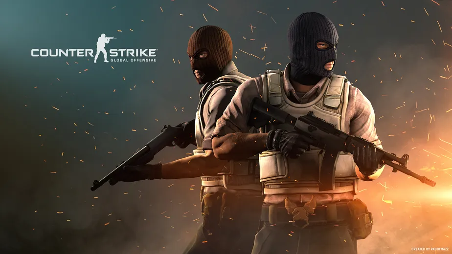

Bem-vindo ao Meu Site Simples!
Este é um exemplo de um site simples para sua explicação em sala de aula.

Como surgiu o Cs Go ?
Counter-Strike iniciou no Brasil por iniciativa de dois servidores de jogos, Elogica e Unigames. Inicialmente, o MOD do Half-Life pouco conhecido, atraía poucos entusiastas que entravam nos servidores desses dois provedores e aguardavam a entrada de outros jogadores, isso na versão Beta 1 do jogo.
Quem é o criador a final ?
CS:GO: Brasil tem 3ª maior comunidade de jogadores do mundo ...
A base de dados do Leetify revelou que, atualmente, o Counter-Strike conta com 14 milhões de jogadores. Se comparado com a última lista apresentada pelo site especializado em análises, o Brasil saltou da quarta para a terceira posição; no último levantamento feito pelo site, o país ainda estava atrás da Polônia.